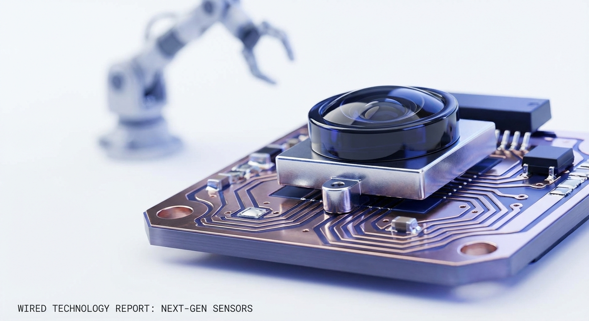

Physical operations running on guesswork. AI agents that see what others can't. Not prediction — precision.
V2 shifts the register from documentary to editorial. Same brand conviction — quieter confidence, more contemporary surface. The world it operates in is precise, fast, and technically literate.
White-dominant. The signal is electric indigo — deep frequency, the color of something being processed or transmitted. Not corporate blue. Not UI-purple. A frequency.
Same IBM Plex pairing, different register. Extra-light (200) for display — creates a tension between scale and delicacy. The mono carries more weight here; it's not just labels, it's structural.
V2 shifts from Hasselblad/Tri-X documentary to contemporary editorial — crisp, precise, slightly cool. Color photography where the color itself carries information. The machine as a precision instrument.

Direction notes (V2):
— Color photography. Cool grading — indigo shadows, clean whites.
— Editorial precision: crisp focus, deliberate composition, no stock aesthetics.
— Specular highlights on metal surfaces — the world as information-dense.
— Reference: Hufton+Crow architecture, Wired editorial, Bloomberg Businessweek photography.
V2 voice is slightly more contemporary — shorter sentences, more white space in the language itself.
Same geometric F-with-signal direction, expressed in the V2 palette. The signal color shifts from warm red to electric indigo.